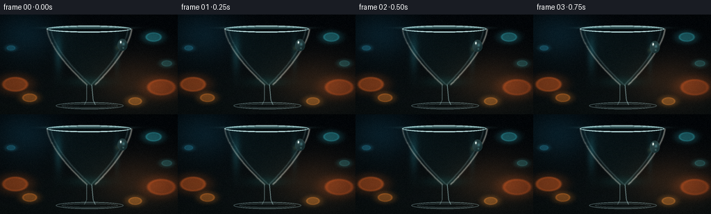
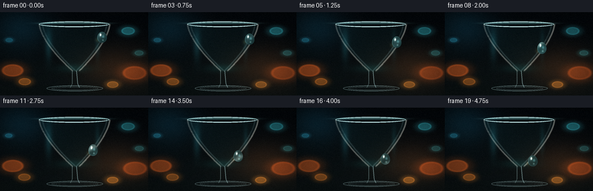
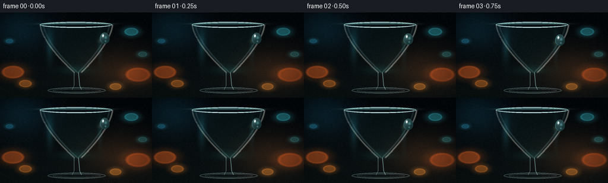

CODING AGENTS AS PIXEL WORLD MODELS
traex/DeepSeek-V4.1-Flash · phygen_037
点击播放 · 原生 RGB 像素
逐轮保存的候选
回放视频、检查图与代码变化。
每份候选均可单独播放。实际图片检查记录在下方工具轨迹中。
候选 01播放与检查图
点击播放 · 原生 RGB 像素

展开代码变化
--- 上一保存版本
+++ 本次保存版本
@@ -0,0 +1,434 @@
+from pathlib import Path
+
+import numpy as np
+from PIL import Image, ImageDraw
+from scipy.ndimage import gaussian_filter, map_coordinates
+
+import artifact_io
+
+
+W, H, N, FPS = 256, 144, 20, 4.0
+SS = 3
+WS, HS = W * SS, H * SS
+OUT = Path(__file__).resolve().parent
+
+
+def clamp01(a):
+ return np.clip(a, 0.0, 1.0)
+
+
+def smoothstep(a, b, x):
+ t = clamp01((x - a) / (b - a))
+ return t * t * (3.0 - 2.0 * t)
+
+
+def mix(a, b, t):
+ t = np.asarray(t, dtype=np.float32)
+ if t.ndim == 2:
+ t = t[..., None]
+ return a * (1.0 - t) + b * t
+
+
+def sample(image, x, y):
+ coords = np.stack((y * (HS - 1), x * (WS - 1)))
+ return np.stack(
+ [
+ map_coordinates(image[..., c], coords, order=1, mode="nearest")
+ for c in range(3)
+ ],
+ axis=-1,
+ )
+
+
+def make_mask(draw_fn, blur=0.0):
+ image = Image.new("L", (WS, HS), 0)
+ draw_fn(ImageDraw.Draw(image))
+ mask = np.asarray(image, dtype=np.float32) / 255.0
+ if blur:
+ mask = gaussian_filter(mask, blur)
+ return mask
+
+
+def px(points):
+ return [(x * WS, y * HS) for x, y in points]
+
+
+def ellipse_box(cx, cy, rx, ry):
+ return [(cx - rx) * WS, (cy - ry) * HS, (cx + rx) * WS, (cy + ry) * HS]
+
+
+YY, XX = np.mgrid[0:HS, 0:WS].astype(np.float32)
+X = XX / (WS - 1)
+Y = YY / (HS - 1)
+
+TEAL = np.array([0.25, 0.68, 0.69], dtype=np.float32)
+PALE = np.array([0.80, 0.96, 0.96], dtype=np.float32)
+WHITE = np.array([1.0, 0.99, 0.94], dtype=np.float32)
+AMBER = np.array([0.95, 0.48, 0.16], dtype=np.float32)
+
+
+def background(time):
+ top = np.array([0.012, 0.027, 0.041], dtype=np.float32)
+ bottom = np.array([0.043, 0.070, 0.075], dtype=np.float32)
+ vertical = smoothstep(0.0, 1.0, Y)
+ image = top * (1.0 - vertical[..., None]) + bottom * vertical[..., None]
+
+ broad = np.exp(
+ -(((X - 0.79) / 0.30) ** 2 + ((Y - 0.68) / 0.32) ** 2) * 1.7
+ )
+ image += broad[..., None] * np.array([0.14, 0.070, 0.026], dtype=np.float32)
+ cool = np.exp(
+ -(((X - 0.13) / 0.26) ** 2 + ((Y - 0.18) / 0.33) ** 2) * 1.8
+ )
+ image += cool[..., None] * np.array([0.025, 0.105, 0.135], dtype=np.float32)
+
+ bokeh = [
+ (0.085, 0.700, 0.083, np.array([0.76, 0.31, 0.075]), 0.32, 0.13),
+ (0.165, 0.835, 0.048, np.array([0.92, 0.48, 0.12]), 0.20, 0.15),
+ (0.865, 0.225, 0.052, np.array([0.22, 0.72, 0.76]), 0.19, 0.15),
+ (0.910, 0.730, 0.092, np.array([0.72, 0.27, 0.065]), 0.26, 0.13),
+ (0.760, 0.870, 0.044, np.array([0.96, 0.55, 0.16]), 0.19, 0.16),
+ (0.060, 0.335, 0.028, np.array([0.17, 0.58, 0.68]), 0.14, 0.12),
+ (0.940, 0.490, 0.034, np.array([0.22, 0.60, 0.61]), 0.12, 0.13),
+ ]
+ for index, (cx, cy, radius, color, strength, rim_strength) in enumerate(bokeh):
+ wobble = 0.0015 * np.sin(time * 0.9 + index * 1.7)
+ distance = np.sqrt((X - cx - wobble) ** 2 + (Y - cy) ** 2)
+ disk = 1.0 - smoothstep(radius * 0.78, radius, distance)
+ glow = np.exp(-((distance / (radius * 1.35)) ** 4))
+ rim = np.exp(-((distance - radius * 0.78) / (radius * 0.095)) ** 2)
+ pulse = 1.0 + 0.05 * np.sin(time * 1.1 + index)
+ image += color * (strength * disk + 0.24 * glow + rim_strength * rim)[..., None] * pulse
+
+ return image
+
+
+BOWL_TOP = 0.145
+BOWL_BOTTOM = 0.705
+PROFILE_T = np.linspace(0.0, 1.0, 120)
+LEFT_PROFILE = np.column_stack(
+ (0.265 + 0.225 * PROFILE_T**1.55, BOWL_TOP + (BOWL_BOTTOM - BOWL_TOP) * PROFILE_T)
+)
+RIGHT_PROFILE = np.column_stack(
+ (0.740 - 0.205 * PROFILE_T**1.55, BOWL_TOP + (BOWL_BOTTOM - BOWL_TOP) * PROFILE_T)
+)
+
+
+def bowl_polygon():
+ return np.vstack(
+ (
+ np.array([[0.265, BOWL_TOP]], dtype=np.float32),
+ LEFT_PROFILE,
+ np.array([[0.535, BOWL_BOTTOM]], dtype=np.float32),
+ RIGHT_PROFILE[::-1],
+ np.array([[0.740, BOWL_TOP]], dtype=np.float32),
+ )
+ )
+
+
+def build_masks():
+ bowl = make_mask(lambda d: d.polygon(px(bowl_polygon()), fill=255), 0.45)
+ opening = make_mask(
+ lambda d: d.ellipse(ellipse_box(0.500, 0.149, 0.222, 0.028), fill=255), 0.8
+ )
+ stem = make_mask(
+ lambda d: d.polygon(
+ px(
+ [
+ (0.486, 0.684),
+ (0.516, 0.684),
+ (0.524, 0.858),
+ (0.536, 0.905),
+ (0.475, 0.905),
+ (0.487, 0.858),
+ ]
+ ),
+ fill=255,
+ ),
+ 0.45,
+ )
+ base = make_mask(
+ lambda d: (
+ d.ellipse(ellipse_box(0.505, 0.914, 0.190, 0.034), fill=255),
+ d.rectangle(
+ [
+ 0.450 * WS,
+ 0.900 * HS,
+ 0.560 * WS,
+ 0.922 * HS,
+ ],
+ fill=255,
+ ),
+ ),
+ 0.55,
+ )
+ body = np.maximum.reduce((bowl, stem, base))
+ edge = np.exp(-gaussian_filter(body, 1.2 * SS) / (0.006 * HS))
+ return bowl, opening, stem, base, body, edge
+
+
+BOWL_MASK, OPENING_MASK, STEM_MASK, BASE_MASK, GLASS_MASK, GLASS_EDGE = build_masks()
+
+
+def stroke(mask, sigma=0.8):
+ return gaussian_filter(mask, sigma)
+
+
+def profile_line_mask(points, width=1.4):
+ return make_mask(
+ lambda d: d.line(px(points), fill=255, width=max(1, round(width * SS)), joint="curve"),
+ 0.75 * SS,
+ )
+
+
+LEFT_EDGE = profile_line_mask(LEFT_PROFILE, 1.15)
+RIGHT_EDGE = profile_line_mask(RIGHT_PROFILE, 1.25)
+LEFT_INNER = profile_line_mask(
+ np.column_stack((LEFT_PROFILE[:, 0] + 0.021, LEFT_PROFILE[:, 1])), 0.72
+)
+RIGHT_INNER = profile_line_mask(
+ np.column_stack((RIGHT_PROFILE[:, 0] - 0.021, RIGHT_PROFILE[:, 1])), 0.72
+)
+RIM_OUTER = make_mask(
+ lambda d: d.ellipse(
+ ellipse_box(0.500, 0.145, 0.238, 0.034),
+ outline=255,
+ width=round(1.7 * SS),
+ ),
+ 0.65,
+)
+RIM_INNER = make_mask(
+ lambda d: d.ellipse(
+ ellipse_box(0.500, 0.149, 0.222, 0.028),
+ outline=255,
+ width=max(1, round(0.65 * SS)),
+ ),
+ 0.55,
+)
+STEM_LEFT = make_mask(
+ lambda d: d.line(
+ px([(0.487, 0.704), (0.487, 0.858), (0.475, 0.904)]),
+ fill=255,
+ width=round(0.9 * SS),
+ ),
+ 0.7,
+)
+STEM_RIGHT = make_mask(
+ lambda d: d.line(
+ px([(0.516, 0.704), (0.524, 0.858), (0.536, 0.904)]),
+ fill=255,
+ width=round(0.9 * SS),
+ ),
+ 0.7,
+)
+BASE_OUTER = make_mask(
+ lambda d: d.ellipse(
+ ellipse_box(0.505, 0.914, 0.190, 0.034),
+ outline=255,
+ width=round(1.05 * SS),
+ ),
+ 0.7,
+)
+BASE_INNER = make_mask(
+ lambda d: d.ellipse(
+ ellipse_box(0.505, 0.916, 0.158, 0.019),
+ outline=255,
+ width=max(1, round(0.55 * SS)),
+ ),
+ 0.65,
+)
+
+
+def drop_center(s):
+ cx = 0.689 - 0.094 * s + 0.0032 * np.sin(np.pi * 2.0 * s)
+ cy = 0.302 + 0.337 * s
+ return cx, cy
+
+
+PATH_S = np.linspace(0.0, 1.0, 180)
+PATH_X, PATH_Y = drop_center(PATH_S)
+
+
+def trail_mask(progress):
+ if progress <= 0.015:
+ return np.zeros((HS, WS), dtype=np.float32)
+ count = max(2, int(progress * (len(PATH_S) - 1)) + 1)
+ points = np.column_stack((PATH_X[:count], PATH_Y[:count]))
+ mask = make_mask(
+ lambda d: d.line(px(points), fill=255, width=max(1, round(0.62 * SS)), joint="curve"),
+ 0.65 * SS,
+ )
+ # Let the trail evaporate gently behind the bead.
+ taper = np.linspace(0.35, 1.0, count)
+ tapered = np.zeros_like(mask)
+ for index in range(count - 1):
+ a = px([points[index]])[0]
+ b = px([points[index + 1]])[0]
+ y0 = max(0, int(min(a[1], b[1]) - 4 * SS))
+ y1 = min(HS, int(max(a[1], b[1]) + 4 * SS))
+ x0 = max(0, int(min(a[0], b[0]) - 4 * SS))
+ x1 = min(WS, int(max(a[0], b[0]) + 4 * SS))
+ if y1 > y0 and x1 > x0:
+ tapered[y0:y1, x0:x1] = np.maximum(
+ tapered[y0:y1, x0:x1], mask[y0:y1, x0:x1] * taper[index]
+ )
+ return tapered
+
+
+def glass_layer(base, time, progress):
+ scene = base.copy()
+
+ # Thick glass bends the defocused background, with a faint green-cyan body.
+ warp_x = X + (X - 0.5) * 0.034 + 0.004 * np.sin(10.0 * Y + 0.2)
+ warp_y = Y + (Y - 0.43) * 0.010 + 0.0025 * np.sin(13.0 * X)
+ refracted = sample(base, clamp01(warp_x), clamp01(warp_y))
+ tint = refracted * 0.72 + base * 0.13 + TEAL * 0.15
+ body_alpha = BOWL_MASK * (0.28 + 0.18 * GLASS_EDGE)
+ body_alpha *= 1.0 - 0.60 * OPENING_MASK
+ scene = mix(scene, tint, body_alpha)
+
+ # Soft internal thickness and a caustic pool at the base of the bowl.
+ inner_glow = np.exp(
+ -(((X - 0.50) / 0.15) ** 2 + ((Y - 0.675) / 0.065) ** 2) * 1.8
+ )
+ scene += inner_glow[..., None] * np.array([0.015, 0.075, 0.072], dtype=np.float32)
+
+ side_glow = np.exp(
+ -(((X - 0.328) / 0.030) ** 2 + ((Y - 0.395) / 0.23) ** 2) * 1.7
+ )
+ side_glow += 0.55 * np.exp(
+ -(((X - 0.658) / 0.022) ** 2 + ((Y - 0.390) / 0.25) ** 2) * 2.0
+ )
+ scene += side_glow[..., None] * np.array([0.04, 0.13, 0.14], dtype=np.float32)
+
+ scene = mix(scene, PALE, 0.46 * LEFT_INNER + 0.50 * RIGHT_INNER)
+ scene = mix(scene, PALE, 0.72 * RIM_OUTER + 0.42 * RIM_INNER)
+ scene = mix(scene, WHITE, 0.63 * LEFT_EDGE + 0.72 * RIGHT_EDGE)
+ scene = mix(scene, PALE, 0.40 * STEM_LEFT + 0.56 * STEM_RIGHT)
+ scene = mix(scene, PALE, 0.46 * BASE_OUTER + 0.35 * BASE_INNER)
+
+ # A fine bright shoulder at the rim sells the polished glass thickness.
+ rim_shoulder = np.exp(
+ -(((X - 0.50) / 0.235) ** 4 + ((Y - 0.132) / 0.010) ** 2)
+ )
+ scene += rim_shoulder[..., None] * np.array([0.20, 0.32, 0.31], dtype=np.float32)
+
+ wet = trail_mask(progress)
+ scene = mix(scene, np.array([0.56, 0.86, 0.84], dtype=np.float32), 0.085 * wet)
+ return scene
+
+
+def drop_coords(cx, cy, s):
+ elongation = 1.0 + 0.075 * np.sin(np.pi * s)
+ half_w = 0.0305 * (1.0 - 0.035 * np.sin(np.pi * s))
+ half_h = 0.0610 * elongation
+ dx = (X - cx) / half_w
+ dy = (Y - cy) / half_h
+ lower_width = 0.84 + 0.20 * clamp01((dy + 1.0) * 0.5)
+ qx = dx / lower_width
+ r2 = qx * qx + dy * dy
+ return dx, dy, qx, r2, half_w, half_h
+
+
+def composite_drop(scene, s):
+ cx, cy = drop_center(s)
+ dx, dy, qx, r2, half_w, half_h = drop_coords(cx, cy, s)
+ inside = 1.0 - smoothstep(0.975, 1.015, np.sqrt(r2))
+ nz = np.sqrt(np.maximum(0.0, 1.0 - r2))
+
+ # The bead focuses the glass and bokeh into a tiny inverted lens image.
+ lens_x = cx - 0.57 * (X - cx) + 0.011 * np.clip(qx, -1.4, 1.4)
+ lens_y = cy - 0.57 * (Y - cy) + 0.010 * np.clip(dy, -1.4, 1.4)
+ lens = sample(scene, clamp01(lens_x), clamp01(lens_y))
+ center = sample(scene, np.full_like(X, cx), np.full_like(Y, cy))
+ water = lens * 0.66 + center * 0.16 + TEAL * 0.10
+ water *= (0.86 + 0.22 * nz)[..., None]
+
+ fresnel = (1.0 - nz) ** 2
+ water = mix(water, np.array([0.58, 0.92, 0.93], dtype=np.float32), 0.22 * fresnel)
+
+ key = np.clip(-0.60 * qx - 0.66 * dy + 0.46 * nz, 0.0, 1.0)
+ water += (0.055 * key**2)[..., None] * PALE
+
+ spec_key = np.exp(
+ -(((qx + 0.34) / 0.16) ** 2 + ((dy + 0.43) / 0.21) ** 2) * 1.2
+ )
+ spec_cool = np.exp(
+ -(((qx - 0.25) / 0.31) ** 2 + ((dy + 0.10) / 0.31) ** 2) * 1.4
+ )
+ spec_low = np.exp(
+ -(((qx - 0.16) / 0.20) ** 2 + ((dy - 0.53) / 0.17) ** 2) * 1.5
+ )
+ water += (0.88 * spec_key)[..., None] * WHITE
+ water += (0.24 * spec_cool)[..., None] * np.array([0.58, 0.90, 0.94], dtype=np.float32)
+ water += (0.28 * spec_low)[..., None] * np.array([0.76, 0.96, 0.92], dtype=np.float32)
+
+ # A dark contact edge and a tiny bright caustic make the water feel wet.
+ rim = np.exp(-((np.sqrt(r2) - 0.985) / 0.055) ** 2)
+ water = mix(water, np.array([0.05, 0.13, 0.14], dtype=np.float32), 0.22 * rim)
+
+ shadow = np.exp(
+ -(
+ ((X - cx - 0.006) / (half_w * 1.18)) ** 2
+ + ((Y - cy - 0.009) / (half_h * 1.14)) ** 2
+ )
+ )
+ scene = mix(scene, np.array([0.010, 0.026, 0.029], dtype=np.float32), 0.17 * shadow)
+
+ caustic = np.exp(
+ -(
+ ((X - cx + half_w * 0.88) / (half_w * 0.44)) ** 2
+ + ((Y - cy - half_h * 0.50) / (half_h * 0.38)) ** 2
+ )
+ )
+ scene += (0.12 * caustic)[..., None] * np.array([0.82, 0.68, 0.33], dtype=np.float32)
+
+ alpha = inside * 0.965
+ scene = mix(scene, water, alpha)
+ scene += (0.28 * spec_key * inside)[..., None] * WHITE
+ return scene
+
+
+def postprocess(image, frame_index):
+ image = clamp01(image)
+ small = Image.fromarray((image * 255.0 + 0.5).astype(np.uint8)).resize(
+ (W, H), Image.Resampling.LANCZOS
+ )
+ out = np.asarray(small, dtype=np.float32) / 255.0
+
+ luminance = out @ np.array([0.2126, 0.7152, 0.0722], dtype=np.float32)
+ bloom_source = out * smoothstep(0.54, 0.95, luminance)[..., None]
+ bloom = np.stack(
+ [gaussian_filter(bloom_source[..., c], 2.2) for c in range(3)], axis=-1
+ )
+ out += bloom * 0.13
+
+ yy = np.linspace(-1.0, 1.0, H, dtype=np.float32)[:, None]
+ xx = np.linspace(-1.0, 1.0, W, dtype=np.float32)[None, :]
+ vignette = 1.0 - 0.18 * smoothstep(0.55, 1.35, np.sqrt(xx * xx + yy * yy))
+ out *= vignette[..., None]
+
+ out = mix(out, out * out * (3.0 - 2.0 * out), 0.18)
+ rng = np.random.default_rng(1000 + frame_index)
+ grain = rng.normal(0.0, 0.006, (H, W, 1)).astype(np.float32)
+ out = clamp01(out + grain)
+ return (out * 255.0 + 0.5).astype(np.uint8)
+
+
+def render():
+ frames = []
+ for frame_index in range(N):
+ t = frame_index / (N - 1)
+ eased = t * t * (3.0 - 2.0 * t)
+ time = frame_index / FPS
+ scene = background(time)
+ scene = glass_layer(scene, time, eased)
+ scene = composite_drop(scene, eased)
+ frames.append(postprocess(scene, frame_index))
+ return np.stack(frames)
+
+
+if __name__ == "__main__":
+ frames = render()
+ artifact_io.save(frames, OUT)
+ print(f"saved {frames.shape} to {OUT}")
候选 02播放与检查图
点击播放 · 原生 RGB 像素

展开代码变化
--- 上一保存版本
+++ 本次保存版本
@@ -240,8 +240,8 @@
def drop_center(s):
- cx = 0.689 - 0.094 * s + 0.0032 * np.sin(np.pi * 2.0 * s)
- cy = 0.302 + 0.337 * s
+ cx = 0.689 - 0.094 * s + 0.0042 * np.sin(np.pi * 2.0 * s)
+ cy = 0.300 + 0.339 * s
return cx, cy
@@ -319,9 +319,9 @@
def drop_coords(cx, cy, s):
- elongation = 1.0 + 0.075 * np.sin(np.pi * s)
- half_w = 0.0305 * (1.0 - 0.035 * np.sin(np.pi * s))
- half_h = 0.0610 * elongation
+ elongation = 1.0 + 0.080 * np.sin(np.pi * s)
+ half_w = 0.0345 * (1.0 - 0.040 * np.sin(np.pi * s))
+ half_h = 0.0665 * elongation
dx = (X - cx) / half_w
dy = (Y - cy) / half_h
lower_width = 0.84 + 0.20 * clamp01((dy + 1.0) * 0.5)
@@ -341,14 +341,20 @@
lens_y = cy - 0.57 * (Y - cy) + 0.010 * np.clip(dy, -1.4, 1.4)
lens = sample(scene, clamp01(lens_x), clamp01(lens_y))
center = sample(scene, np.full_like(X, cx), np.full_like(Y, cy))
- water = lens * 0.66 + center * 0.16 + TEAL * 0.10
- water *= (0.86 + 0.22 * nz)[..., None]
-
- fresnel = (1.0 - nz) ** 2
- water = mix(water, np.array([0.58, 0.92, 0.93], dtype=np.float32), 0.22 * fresnel)
+ water = lens * 0.61 + center * 0.13 + TEAL * 0.15
+ water *= (0.82 + 0.27 * nz)[..., None]
+
+ fresnel = (1.0 - nz) ** 1.7
+ water = mix(water, np.array([0.58, 0.92, 0.93], dtype=np.float32), 0.28 * fresnel)
key = np.clip(-0.60 * qx - 0.66 * dy + 0.46 * nz, 0.0, 1.0)
- water += (0.055 * key**2)[..., None] * PALE
+ water += (0.075 * key**2)[..., None] * PALE
+
+ # The upper-left shoulder catches a broad, soft window reflection.
+ shoulder = np.exp(
+ -(((qx + 0.50) / 0.30) ** 2 + ((dy + 0.40) / 0.42) ** 2) * 1.3
+ )
+ water += (0.16 * shoulder * smoothstep(0.15, 0.90, nz))[..., None] * PALE
spec_key = np.exp(
-(((qx + 0.34) / 0.16) ** 2 + ((dy + 0.43) / 0.21) ** 2) * 1.2
@@ -359,13 +365,17 @@
spec_low = np.exp(
-(((qx - 0.16) / 0.20) ** 2 + ((dy - 0.53) / 0.17) ** 2) * 1.5
)
- water += (0.88 * spec_key)[..., None] * WHITE
- water += (0.24 * spec_cool)[..., None] * np.array([0.58, 0.90, 0.94], dtype=np.float32)
- water += (0.28 * spec_low)[..., None] * np.array([0.76, 0.96, 0.92], dtype=np.float32)
+ water += (1.05 * spec_key)[..., None] * WHITE
+ water += (0.30 * spec_cool)[..., None] * np.array([0.58, 0.90, 0.94], dtype=np.float32)
+ water += (0.34 * spec_low)[..., None] * np.array([0.76, 0.96, 0.92], dtype=np.float32)
# A dark contact edge and a tiny bright caustic make the water feel wet.
- rim = np.exp(-((np.sqrt(r2) - 0.985) / 0.055) ** 2)
- water = mix(water, np.array([0.05, 0.13, 0.14], dtype=np.float32), 0.22 * rim)
+ radius = np.sqrt(r2)
+ rim = np.exp(-((radius - 0.965) / 0.070) ** 2)
+ dark_rim = rim * smoothstep(-0.15, 0.95, qx + 0.35 * dy)
+ bright_rim = rim * smoothstep(-0.25, -1.0, qx + 0.20 * dy)
+ water = mix(water, np.array([0.035, 0.105, 0.115], dtype=np.float32), 0.31 * dark_rim)
+ water = mix(water, np.array([0.70, 0.96, 0.95], dtype=np.float32), 0.23 * bright_rim)
shadow = np.exp(
-(
@@ -383,9 +393,9 @@
)
scene += (0.12 * caustic)[..., None] * np.array([0.82, 0.68, 0.33], dtype=np.float32)
- alpha = inside * 0.965
+ alpha = inside * 0.975
scene = mix(scene, water, alpha)
- scene += (0.28 * spec_key * inside)[..., None] * WHITE
+ scene += (0.34 * spec_key * inside)[..., None] * WHITE
return scene
候选 03播放与检查图
候选 04播放与检查图
点击播放 · 原生 RGB 像素


展开代码变化
--- 上一保存版本
+++ 本次保存版本
@@ -1,8 +1,7 @@
from pathlib import Path
import numpy as np
-from PIL import Image, ImageDraw
-from scipy.ndimage import gaussian_filter, map_coordinates
+from PIL import Image, ImageDraw, ImageFilter
import artifact_io
@@ -30,14 +29,17 @@
def sample(image, x, y):
- coords = np.stack((y * (HS - 1), x * (WS - 1)))
- return np.stack(
- [
- map_coordinates(image[..., c], coords, order=1, mode="nearest")
- for c in range(3)
- ],
- axis=-1,
- )
+ sx = np.clip(x, 0.0, 1.0) * (WS - 1)
+ sy = np.clip(y, 0.0, 1.0) * (HS - 1)
+ x0 = np.floor(sx).astype(np.int32)
+ y0 = np.floor(sy).astype(np.int32)
+ x1 = np.minimum(x0 + 1, WS - 1)
+ y1 = np.minimum(y0 + 1, HS - 1)
+ fx = (sx - x0)[..., None]
+ fy = (sy - y0)[..., None]
+ top = image[y0, x0] * (1.0 - fx) + image[y0, x1] * fx
+ bottom = image[y1, x0] * (1.0 - fx) + image[y1, x1] * fx
+ return top * (1.0 - fy) + bottom * fy
def make_mask(draw_fn, blur=0.0):
@@ -45,8 +47,14 @@
draw_fn(ImageDraw.Draw(image))
mask = np.asarray(image, dtype=np.float32) / 255.0
if blur:
- mask = gaussian_filter(mask, blur)
+ mask = blur_mask(mask, blur)
return mask
+
+
+def blur_mask(mask, sigma):
+ image = Image.fromarray((clamp01(mask) * 255.0 + 0.5).astype(np.uint8))
+ image = image.filter(ImageFilter.GaussianBlur(radius=sigma))
+ return np.asarray(image, dtype=np.float32) / 255.0
def px(points):
@@ -163,7 +171,7 @@
0.55,
)
body = np.maximum.reduce((bowl, stem, base))
- edge = np.exp(-gaussian_filter(body, 1.2 * SS) / (0.006 * HS))
+ edge = np.exp(-blur_mask(body, 1.2 * SS) / (0.006 * HS))
return bowl, opening, stem, base, body, edge
@@ -409,7 +417,17 @@
luminance = out @ np.array([0.2126, 0.7152, 0.0722], dtype=np.float32)
bloom_source = out * smoothstep(0.54, 0.95, luminance)[..., None]
bloom = np.stack(
- [gaussian_filter(bloom_source[..., c], 2.2) for c in range(3)], axis=-1
+ [
+ np.asarray(
+ Image.fromarray(
+ (clamp01(bloom_source[..., c]) * 255.0 + 0.5).astype(np.uint8)
+ ).filter(ImageFilter.GaussianBlur(radius=2.2)),
+ dtype=np.float32,
+ )
+ / 255.0
+ for c in range(3)
+ ],
+ axis=-1,
)
out += bloom * 0.13
可观测工具轨迹
实际执行的命令与返回图片。
命令 1exit 0
/bin/bash -c 'cat prompt.txt'
命令 2exit 0
/bin/bash -c 'cat GENERATION_RULES.md'
命令 3exit 0
/bin/bash -c 'cat task_spec.json'
命令 4exit 0
/bin/bash -c "find . -maxdepth 2 -type f -not -path './.git/*' -printf '%p %s bytes\\n' | sort"
命令 5exit 0
/bin/bash -c 'cat artifact_io.py'
命令 6exit 0
/bin/bash -c 'cat player_template.html'
命令 7exit 0
/bin/bash -c "python - <<'PY'
import importlib.util
for m in ['numpy','PIL','cv2','imageio','scipy','skimage']:
print(m, bool(importlib.util.find_spec(m)))
PY"命令 8exit 0
/bin/bash -c 'python generate.py'
命令 9exit 0
/bin/bash -c 'command -v chafa || command -v viu || command -v jp2 || true'
命令 10exit 0
/bin/bash -c "python - <<'PY'
from PIL import Image
import numpy as np
im=np.asarray(Image.open('inspection.png'))
print('inspection', im.shape, 'mean', im.mean((0,1)), 'std', im.std((0,1)))
for i in [0,5,10,15,19]:
a=np.asarray(Image.open(f'frames/{i:02d}.png')).astype(float)
lum=a@np.array([.2126,.7152,.0722])
print(i, 'mean', a.mean((0,1)).round(1), 'lum pct', np.percentile(lum,[1,50,90,99]).round(1), 'max', a.max())
PY"命令 11exit 0
/bin/bash -c 'ls -lh pixels.npz index.html inspection.png frames/00.png frames/19.png && python -m py_compile generate.py'
命令 12exit 0
/bin/bash -c "python - <<'PY'
from PIL import Image
import numpy as np
chars=' .,:;irsXA253hMHGS#9B&@'
for fn in ['frames/00.png','frames/10.png','frames/19.png']:
a=np.asarray(Image.open(fn).resize((80,45),Image.Resampling.LANCZOS)).astype(float)
lum=a@np.array([.2126,.7152,.0722])
lo,hi=np.percentile(lum,[2,99.5]); z=np.clip((lum-lo)/(hi-lo),0,1)
print('\\n',fn)
for row in z:
print(''.join(chars[int(v*(len(chars)-1))] for v in row))
PY"命令 13exit 0
/bin/bash -c "python - <<'PY'
from PIL import Image
import numpy as np
for i in [0,5,10,15,19]:
a=np.asarray(Image.open(f'frames/{i:02d}.png')).astype(float)
lum=a@np.array([.2126,.7152,.0722])
print('\\nframe',i)
# occupancy threshold and center of strongest pixels
for q in [100,140,180,220]:
ys,xs=np.where(lum>q)
print(q, len(xs), 'x', (xs.min(),xs.max()) if len(xs) else None, 'y',(ys.min(),ys.max()) if len(ys) else None)
PY"命令 14exit 0
/bin/bash -c "python - <<'PY'
from PIL import Image
import numpy as np
chars=' .,:;irsXA253hMHGS#9B&@'
for i in [0,10,19]:
a=np.asarray(Image.open(f'frames/{i:02d}.png')).astype(float)
# examine droplet neighborhood only, x 145..205, y 35..105
a=a[30:110,140:210]
lum=a@np.array([.2126,.7152,.0722])
lo,hi=np.percentile(lum,[3,99]); z=np.clip((lum-lo)/(hi-lo),0,1)
print('\\nframe',i,'drop crop')
for row in z[::2,::2]:
print(''.join(chars[int(v*(len(chars)-1))] for v in row))
PY"命令 15exit 0
/bin/bash -c "python - <<'PY'
from PIL import Image
import numpy as np
imgs=np.stack([np.asarray(Image.open(f'frames/{i:02d}.png')).astype(float) for i in range(20)])
d=np.abs(imgs-imgs[0]).mean(-1)
for i in range(20):
ys,xs=np.where(d[i]>4)
if len(xs): print(i, len(xs), (xs.min(),xs.max(),ys.min(),ys.max()), 'max',d[i].max().round(1))
PY"命令 16exit 0
/bin/bash -c "python - <<'PY'
from PIL import Image
import numpy as np
for i in range(20):
a=np.asarray(Image.open(f'frames/{i:02d}.png')).astype(float)
lum=a@np.array([.2126,.7152,.0722])
# bounding bright spec within drop region
yy,xx=np.mgrid[:144,:256]
cx=.689-.094*(i/19)**2*(3-2*i/19); cy=.302+.337*(i/19)**2*(3-2*i/19)
rr=((xx-cx)/12)**2+((yy-cy)/24)**2
ys,xs=np.where((lum>160)&(rr<1.3))
print(i, 'center',round(cx,1),round(cy,1), 'bright',len(xs), 'bbox', (xs.min(),xs.max(),ys.min(),ys.max()) if len(xs) else None)
PY"命令 17exit 0
/bin/bash -c "python - <<'PY'
from PIL import Image
import numpy as np
for i in [0,9,19]:
a=np.asarray(Image.open(f'frames/{i:02d}.png')).astype(float)
cx=int((.689-.094*(i/19)**2*(3-2*i/19))*255); cy=int((.302+.337*(i/19)**2*(3-2*i/19))*143)
p=a[max(0,cy-20):cy+20,max(0,cx-12):cx+12]
lum=p@np.array([.2126,.7152,.0722])
print(i, 'cxcy',cx,cy,'mean',p.mean((0,1)).round(1),'lum',np.percentile(lum,[0,10,50,90,100]).round(1))
print('center row', np.round(lum[20]).astype(int).tolist())
PY"命令 18exit 0
/bin/bash -c 'python generate.py'
命令 19exit 0
/bin/bash -c "python - <<'PY'
from PIL import Image
import numpy as np
for i in [0,5,10,15,19]:
a=np.asarray(Image.open(f'frames/{i:02d}.png')).astype(float)
lum=a@np.array([.2126,.7152,.0722])
yy,xx=np.mgrid[:144,:256]
s=(i/19)**2*(3-2*i/19); cx=.689-.094*s+.0042*np.sin(np.pi*2*s); cy=.300+.339*s
rr=((xx-cx*255)/(.0345*(1-.04*np.sin(np.pi*s))*255*1.4))**2+((yy-cy*143)/(.0665*(1+.08*np.sin(np.pi*s))*143*1.4))**2
ys,xs=np.where((lum>160)&(rr<1))
print(i, 'center',round(cx*256,1),round(cy*144,1),'bright',len(xs),'bbox',(xs.min(),xs.max(),ys.min(),ys.max()) if len(xs) else None)
PY"命令 20exit 0
/bin/bash -c "python - <<'PY'
from pathlib import Path
import json, re, hashlib
import numpy as np
from PIL import Image
with np.load('pixels.npz') as z:
p=z['pixels']
print('pixels',p.shape,p.dtype,'packed range',int(p.min()),int(p.max()))
frames=np.stack([np.asarray(Image.open(f'frames/{i:02d}.png')) for i in range(20)])
print('frame files',frames.shape,frames.dtype,'all finite',np.isfinite(frames).all())
print('successive mean abs diff',round(float(np.abs(frames[1:].astype(float)-frames[:-1].astype(float)).mean()),3))
html=Path('index.html').read_text()
m=re.search(r'const DATA=(\\{.*?\\}),W=',html)
data=json.loads(m.group(1))
print('player',data['width'],data['height'],data['frames'],data['fps'],'deltas',len(data['deltas']),'first bytes',len(data['first']))
print('files', {n:Path(n).stat().st_size for n in ['pixels.npz','index.html','inspection.png','transition_check.png']})
PY"命令 21exit 0
/bin/bash -c 'python -m py_compile generate.py && python generate.py'
命令 22exit 0
/bin/bash -c "python - <<'PY'
from pathlib import Path
import json,re
import numpy as np
from PIL import Image
with np.load('pixels.npz') as z: p=z['pixels']
frames=np.stack([np.asarray(Image.open(f'frames/{i:02d}.png')) for i in range(20)])
html=Path('index.html').read_text(); data=json.loads(re.search(r'const DATA=(\\{.*?\\}),W=',html).group(1))
print('shape',frames.shape,'dtype',frames.dtype,'frames',len(list(Path('frames').glob('*.png'))))
print('diff',round(float(np.abs(frames[1:].astype(float)-frames[:-1].astype(float)).mean()),3),'mean',frames.mean().round(2),'p99',np.percentile(frames,99).round(1))
print('player',data['width'],data['height'],data['frames'],data['fps'],len(data['deltas']))
assert frames.shape==(20,144,256,3) and frames.dtype==np.uint8
assert p.shape==(144,256,20) and p.dtype==np.uint32
assert data['width']==256 and data['height']==144 and data['frames']==20 and data['fps']==4.0
print('all checks passed')
PY"保存候选 4 份；完成命令 22 次；可验证图片返回 0 张。原始 API 响应与完整日志保留在本地。